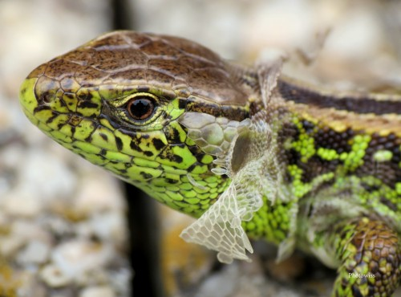
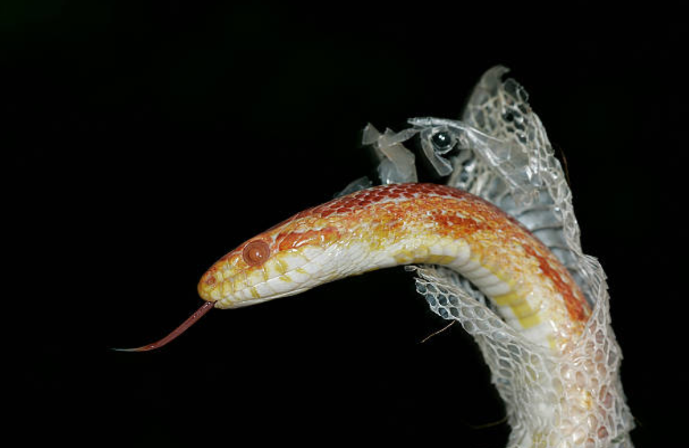

Mûe
Comment est ce qu'un reptile mûe et pourquoi ?
Les reptiles, contrairement aux mammifères, n'ont pas une peau qui grandit au fur et à mesure de leur croissance. Il leur faut donc se débarasser de leurs anciennes écailles pour pouvoir continuer de se développer. Ils grandissent tout au long de leur vie, et donc continuent de mûer jusqu'à leur mort. Durant cette période, la peau a l'air terne et les yeux deviennent blanc opaque. La fréquence de mue varie d'une espèce à une autre, les conditions environnementales, leur alimentation et leur croissance.
Certains reptiles perdent leur peau par pièce, comme les tortues, les iguanes, etc... tandis que d'autres comme les serpents le font en une fois. D'autres comme les geckos léopards mangent leur mue après l'avoir perdue pour récuperer les nutriments qu'elle contient. De nombreux facteurs peuvent provoquer une mauvais mue, comme le manque d'humidité (il est nécessaire d'humidifier une partie du terrarium pour une meilleur mue), de la malnutrition, des infections, des mites ou des manipulations trop fréquentes. Il est essentiel que ces problèmes soit gérés au plus vite pour le bien-être de l'animal.